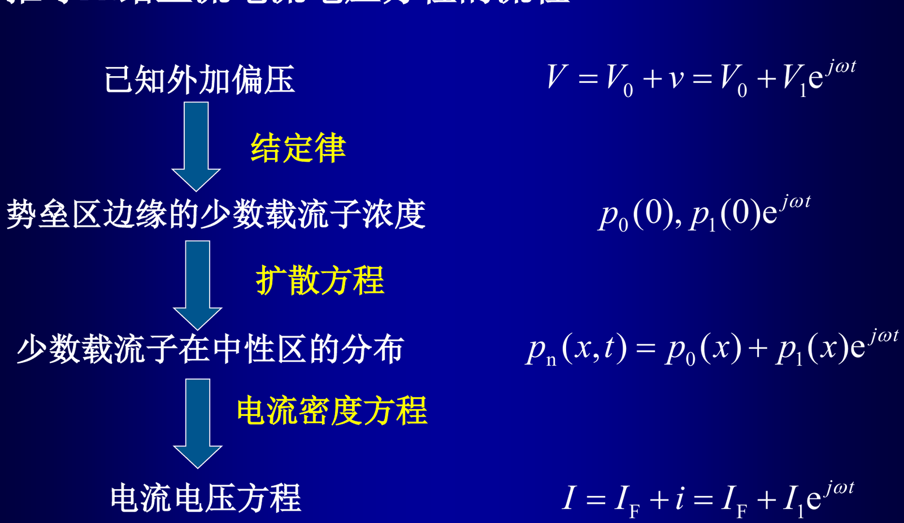

第 2 章 · PN 结
2.14 PN 结的交流小信号参数与等效电路
考纲第 14 条。小信号线性化的做法、交流导纳与直流增量电导、扩散电容的来源，以及二极管交流小信号等效电路中的四个元件。
考纲 2-14）
一句话抓住
小信号条件 的作用是把非线性关系线性化：。 于是交流分量与直流分量可以分开求解，二极管在小信号下等价于
考试范围提醒（2024 复习大纲原文）
"知识点范围：1–4 章我们上课 PPT 的内容都在考查范围内（不要求电路等效图部分，超相移因子不要求）。" 所以等效电路本身不需要画，但其中的元件定义与性质（本征/非本征、 的表达式）仍可能以填空或简答形式出现。
1. 小信号条件与线性化#
设外加电压
其中 是直流偏压（，正偏）， 是叠加的交流小信号振幅， 是角频率。则扩散电流也有同样形式：
由结定律把边界少子浓度展开：
于是边界条件分成直流分量与交流小信号分量两部分：
公式中的每个量
- —— 直流偏置电压（，正偏，）
- —— 交流小信号振幅（，，这是"小信号"的定义）
- —— 角频率（，）
- —— 正向直流电流（，由 决定）
- —— 交流电流振幅、交流分量（）
- —— 少子浓度的直流分量（）
- —— 少子浓度的交流小信号分量（）
- —— 热电压（，，小信号的判据即 ）

2. 把扩散方程拆成两个方程#
把 代入空穴扩散方程，按是否含 拆成两个方程：
解出交流分量并代入电流密度方程，再对总面积分：
3. 交流导纳、直流增量电导与扩散电容#
在 （低频）时利用近似 ：
参数说明
- —— 小信号交流导纳（，复数，含实部与虚部）
- —— 直流增量电导（，，）
- —— 扩散电容（，）
- —— 少子寿命（）
- —— 低频近似条件（—，否则需用完整的 ）
与 §2.13 的接口
就是 §2.13 给出的扩散电容表达式——本节只是换了一条路（从交流导纳出发）得到它。 两条路都要能说清：一条从电荷随电压的变化率出发，一条从交流导纳的虚部出发。
4. 二极管交流小信号等效电路#
5. 易错点#
- 把"小信号"理解成"电压很小"，而忘记判据是 。
- 忘记小信号条件的本质是线性化，答不出"为什么可以把直流与交流分开解"。
- 直流增量电导写成 之外的错误形式（例如漏掉 或 ）。
- 把 、 说成本征元件（它们是非本征的）。
- 把低频近似 的适用条件 漏掉。
6. 自测#
自测
- 写出小信号条件，并说明它的作用是什么。
- 正向直流电流 ，，求直流增量电导 。
- 说出等效电路中哪些是本征元件、哪些是非本征元件，并说明非本征元件与什么有关。
解析要点
- ，，；作用是把 与 的非线性关系线性化，使直流与交流分量可分开求解。
- 。
- 本征：、、；非本征：（漏电导，取决于 PN 结加工质量与清洁程度）、（寄生串联电阻）。